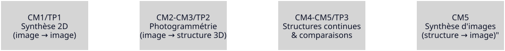

Synthèse d’Images par Rendu Inverse
CM2: Une structure de dimension 2+1
Et si au lieu de tordre les images… on reconstruisait le monde qui les a produites ?
Fil directeur : passer de image image (2D) à image structure (3D) pour synthétiser de nouvelles vues.
Plan du cours
- Pourquoi la 2D bloque : visibilité, profondeur, extrapolation
- Modèle de caméra : projeter 3D 2D (le minimum utile)
- Correspondances 2D–2D : géométrie épipolaire (contrainte)
- De la contrainte à la reconstruction : poses + points (SfM)
- Validation : reprojection, erreurs, ambiguïtés
- Transition : pourquoi “structure” ne suffit pas pour rendre réaliste (vers TP3)
👉 Objectif : comprendre ce qu’est la
photogrammétrie, ce que cela reconstruit vraiment et pourquoi c’est exactement ce qu’il faut pour la synthèse de vues.
Rappel (CM1) : la question de sortie
Qu’est-ce qui manque à la 2D pour gérer proprement la visibilité et les nouvelles vues ?
Réponse : profondeur + caméra + visibilité
on introduit une structure 3D et des poses caméra.
Fil directeur (2D → 3D → continu)

Et on essayera de faire chacun notre propre numérisation !
Ce que TP2 va vous faire faire
- prendre un jeu d’images d’une scène rigide
- estimer poses caméra
- reconstruire une structure (nuage de points)
- vérifier par reprojection
- analyser ce qui est ambigu / mal contraint
👉 CM2 = les concepts nécessaires pour comprendre les sorties de COLMAP (ou équivalent).
BLOC 1
Pourquoi passer au 3D ?
Limite structurelle de la 2D : visibilité
En 2D, on n’a pas d’ordre “devant/derrière”.
Conséquences :
- disocclusions (trous) quand on bouge le point de vue
- extrapolation instable
- artefacts de fusion quand des surfaces se croisent
👉 Le 3D apporte un mécanisme simple : la profondeur décider ce qui est visible.
Limite structurelle de la 2D : extrapolation
Interpolation entre vues proches : possible en 2D.
Mais dès qu’on s’éloigne :
- les correspondances deviennent ambiguës
- les erreurs s’amplifient
- on “invente” sans contrainte
👉 Le 3D donne une contrainte : un point 3D doit re-projeter correctement dans plusieurs images.
Qu’est-ce que la photogrammétrie ?
A partir de :

La photogrammétrie consiste à :
- estimer la géométrie 3D
- estimer les poses des caméras
- à partir d’un ensemble d’images 2D
Autrement dit :
reconstruire la scène 3D qui explique les images observées.
Elle transforme un problème d’images en problème géométrique.
A partir d’un ensemble d’images
On obtient
Ce que doit fournir le “rendu inverse 3D”
Pour pouvoir rendre de nouvelles vues, il faut au minimum :
- des caméras (poses + intrinsics)
- une structure (points 3D) associée aux images
Photogrammétrie = retrouver ce minimum à partir des images.
Respiration
BLOC 2
Au royaume des aveugles, les borgnes sont rois
Comment voit l’oeil de Sauron ?
Le modèle sténopé

Du grec ancien
- στενός, stenós (« étroit, resserré, court »)
- ὀπή, opḗ (« ouverture »)
Projection perspective : idée
Un point 3D (\(\color{#00ff88}{\mathbf{X}}\)) est vu comme un pixel (\(\color{#ffb000}{\mathbf{x}}\)) :
- la caméra “prend” ce qui est dans son repère
- puis projette sur le plan image
Mais pour cela il nous faudra :
- définir la pose de la caméra
- comprendre les paramètres extrinsèques (position + orientation)
- comprendre les paramètres intrinsèques (focale, centre principal, taille pixel)
- naviguer entre plusieurs repères spatiaux
- introduire la notion de coordonnées homogènes
Une caméra est une machine qui transforme un espace 3D en espace image 2D.
Décomposition utile : intrinsics vs pose
- Intrinsics (\(K\)) : focale, centre optique, pixel aspect…
- Extrinsics (\(R,t\)) : où est la caméra, où elle regarde
Schéma mental :
\[ \color{#ffb000}{\mathbf{x}} \sim K [R|t] \color{#00ff88}{\mathbf{X}} \]
👉 En photogrammétrie : on estime (\(\color{#fff}{R,t}\)) (et souvent aussi (\(\color{#fff}{K}\)).
Matrice intrinsèque
\[ K = \begin{pmatrix} \color{#00e0ff}{f_x} & \color{#ffb000}{s} & \color{#00ff88}{c_x} \\ 0 & \color{#00e0ff}{f_y} & \color{#00ff88}{c_y} \\ 0 & 0 & 1 \end{pmatrix} \]
Avec
- \(\color{#00e0ff}{f_x} = f \color{#b388ff}{\alpha_x}\) et \(\color{#00e0ff}{f_y} = f \color{#b388ff}{\alpha_y}\) : focales en pixels
- \(\color{#ffb000}{s}\) : facteur de skew
- \((\color{#00ff88}{c_x}, \color{#00ff88}{c_y})\) : centre optique (principal point)
- \(\color{#b388ff}{\alpha_x} = \frac{1}{\Delta x}\),
\(\color{#b388ff}{\alpha_y} = \frac{1}{\Delta y}\)
En pratique (caméras modernes)
\(\color{#00e0ff}{f_x} \approx \color{#00e0ff}{f_y}\) si les pixels sont carrés
\(\color{#ffb000}{s} \approx 0\) (axes orthogonaux)
Focal
\[ f_x = \frac{f} {\Delta_x}, \quad f_y = \frac{f}{\Delta_y} \]
Centre optique
OK
pour la matrice intrinsèque
Maintenant il ne nous manque plus que les paramètres extrinsèques
\(\color{#00e0ff}{R}\) & \(\color{#ffb000}{t}\)
Définition propre
Les extrinsèques sont :
\[ (\color{#00e0ff}{R}, \color{#ffb000}{t}) \]
où :
- \(\color{#00e0ff}{R}\) = matrice de rotation \(3×3\)
- \(\color{#ffb000}{t}\) = vecteur de translation \(3×1\)
Ils permettent de transformer un point du monde vers le repère caméra :
\[ \mathbf{X}_{\text{cam}} = \color{#00e0ff}{R} \mathbf{X}_{\text{world}} + \color{#ffb000}{t} \]
Attention
Attention
(\(\color{#00e0ff}{R}, \color{#ffb000}{t}\)) ne correspondent pas à la pose et à l’orientation de la caméra
On va essayer de comprendre pourquoi
C’est moi qui bouge ou c’est le monde ?
Dans les moteurs 3D (OpenGL, Unity, Unreal, etc.)
On applique une view matrix :
\[ \mathbf{X}_{\text{cam}} = \color{#00ff88}{V} \times \mathbf{X}_{\text{world}} \]
👉 On ne déplace pas la caméra
👉 On applique l’inverse de sa pose au monde
Parce qu’il est plus simple de transformer le monde par une matrice que de déplacer chaque objet individuellement.
\(\color{#00e0ff}{R}_{wc} = R_{\text{cam}}^{\top}\)
\(\color{#ffb000}{t} = -RC\)
FOV
Pourquoi les poses sont centrales (TP2)
Si on ne sait pas où sont les caméras :
- on ne peut pas trianguler des points
- on ne peut pas re-projeter / valider
- on ne peut pas synthétiser de nouvelles vues
👉 “image structure” = aussi “image caméras”.
Pourquoi a t-on introduit un modèle mathématique de la caméra ?
Parce que sans modèle caméra :
- une image est juste une matrice de pixels
- aucune relation géométrique exploitable n’existe
- impossible de parler de triangulation
- impossible de reconstruire
La 3D n’apparaît que si on suppose un mécanisme de projection.
Une caméra n’est pas un œil.
C’est une matrice.
\(K [R|t]\)
Pause
BLOC 3
On a modélisé les caméras.
OK
Mais où est la 3D ? 🤔
D’abord il nous faut définir des points d’intérêt
Puis faire des correspondances
Puis on triangule
Cool, pas compliqué finalement !
Sauf que …
En pratique on connait pas les poses des caméras 😔
Comment on fait ça du coup ?
Bein, faudrait trouver une matrice
qui permette de récupérer
- la rotation relative
- la translation relative
Donc une matrice qui encode ça.
La matrice essentielle \(E\)
Ok, bon… comment on calcule \(E\) du coup ?
\[ E = K'^T F K \]
\(K\) je connais
Mais wait …
c’est quoi \(F\) ?
Et c’est là que ça devient compliqué
Let me introduce …
La géométrie épipolaire
La géométrie épi-quoi ?
ἐπί (epi) sur, au-dessus, auprès de
πόλος (pólos) pivot, axe, pôle
La géométrie épipolaire décrit la contrainte géométrique
qui lie deux images d’une même scène.
Un point 3D, vu par deux caméras, définit un plan.
👉 On passe en géométrie de compas
Construction
On reprend les correspondances 2D–2D
On repart de : \[ \mathbf{x}_1 \leftrightarrow \mathbf{x}_2 \]
Si deux caméras voient le même point :
- le point 3D est sur deux rayons
- sa projection dans l’autre image doit tomber sur une droite épipolaire
👉 Une correspondance valide ne peut pas être n’importe où : elle doit respecter une géométrie entre les deux vues.
Le plan épipolaire
Un point 3D \(X\) et les deux centres de caméras \(C_1\) et \(C_2\) définissent un plan unique.
C’est le plan épipolaire.
Ce plan coupe les deux plans image selon deux droites épipolaires.
Les lignes épipolaires
Le plan épipolaire coupe les plans image.
L’intersection est une droite.
Cette droite est la ligne épipolaire.
Donc si un point apparaît dans une image, son correspondant dans l’autre image doit se trouver sur cette ligne.
La contrainte épipolaire
Un point \(x\) dans la première image définit une ligne épipolaire dans la seconde.
Le point correspondant \(x'\) doit se trouver sur cette ligne.
La recherche devient 1D au lieu de 2D.
Contrainte épipolaire
Cette relation s’écrit :
\[ x'^T F x = 0 \]
\(F\) est la matrice fondamentale.
Elle encode toute la géométrie entre les deux caméras.
Matrice fondamentale : rôle (sans détails)
La matrice fondamentale (\(F\)) encode la contrainte entre deux vues :
\[ \mathbf{x}_2^\top F \mathbf{x}_1 = 0 \]
Interprétation :
- si un appariement viole beaucoup cette relation → probablement faux
- (\(F\)) dépend seulement des deux caméras (et de leurs intrinsics)
👉 C’est l’outil conceptuel qui transforme des points appariés en “géométrie”.
RANSAC : pourquoi on en a besoin
Les correspondances automatiques contiennent des erreurs.
Idée :
- échantillonner
- estimer un modèle (ex. (\(F\)))
- garder les “inliers” cohérents
👉 En pratique, c’est ce qui rend la photogrammétrie robuste.
Pipeline
images ↓ détection de keypoints ↓ matching (brut) ↓ estimation de F avec RANSAC ← contrainte épipolaire ↓ filtrage des correspondances ← contrainte épipolaire ↓ triangulation
Respiration
BLOC 4
De deux vues à plusieurs : SfM (Structure-from-Motion)
Triangulation : intuition
Si on connaît deux caméras et une correspondance :
- chaque pixel définit un rayon
- l’intersection (approx.) donne un point 3D
👉 “Point 3D” = compromis qui explique au mieux plusieurs observations 2D.
Reconstruction multi-vues : pipeline SfM
Bundle Adjustment : ce que ça fait
On ajuste simultanément :
- les poses des caméras
- les points 3D
pour minimiser l’erreur de reprojection.
👉 Photogrammétrie = optimisation : trouver la structure qui “rend” au mieux les images observées.
Ce qui est reconstruit… et ce qui ne l’est pas
Reconstruit :
- une structure (souvent un nuage de points)
- des poses caméra
- parfois des intrinsics (auto-calibration)
Pas reconstruit (dans ce cours) :
- matériaux / illumination / BRDF
- “vérité” géométrique parfaite partout
- zones jamais observées
Ambiguïtés fondamentales
Même avec une bonne reprojection, il reste :
- échelle (sans référence métrique)
- symétries / répétitions (texture ambiguë)
- zones peu observées (faible recouvrement)
👉 Une reconstruction photogrammétrique est une solution compatible, pas une vérité unique.
Validation et lecture critique des résultats
Reprojection : test central (TP2)
On projette les points 3D dans une image et on compare aux observations.
Si ça colle :
- le modèle explique bien les images
Mais attention :
- plusieurs modèles peuvent “coller”
👉 C’est un test de compatibilité, pas une preuve d’unicité.
Erreurs visibles typiques
- dérive de trajectoire caméra
- nuage “courbé” sur des scènes difficiles
- points bruités / flottants
- trous (zones sans texture, reflets, transparences)
👉 Vous devez apprendre à “lire” un nuage de points comme un diagnostic.
Ce que guide la réussite en pratique
Hypothèses qui aident :
- scène rigide
- recouvrement entre images
- texture suffisante
- variations de point de vue raisonnables
Hypothèses qui cassent :
- objets mobiles
- surfaces uniformes
- reflets / transparence
- faible recouvrement
Conclusion
Pourquoi la structure ne suffit pas à rendre “réaliste” ?
Structure ≠ rendu réaliste
Même avec poses + points :
- trous (échantillonnage)
- aliasing / bruit
- manque de continuité (surfaces)
- dépendance au point de vue
👉 CM3/TP3 : la question devient “quelle représentation pour rendre mieux ?”
Ouverture : représentations pour synthèse de vues
À partir des mêmes données (poses + images) :
- nuage de points (baseline)
- splats / surfels (continuité écran)
- gaussiennes (Gaussian Splatting)
- champs continus (NeRF)
👉 Même entrée, rendu très différent : la représentation est le cœur du réalisme.
À retenir (CM2)
- Photogrammétrie = rendu inverse 3D minimal : images → (poses + structure).
- Les correspondances deviennent une contrainte géométrique (épipolaire).
- SfM = appariement → poses → triangulation → optimisation (BA).
- Reprojection valide la compatibilité, pas l’unicité.
- La structure seule ne suffit pas : il faut de meilleures représentations de rendu (TP3).
Connexion directe avec le TP2
Dans le TP2, votre rapport doit répondre à :
- Quelles hypothèses de scène sont respectées / violées ?
- Qu’est-ce qui est bien reconstruit ? Qu’est-ce qui ne l’est pas ?
- Où la reprojection marche / échoue visuellement ?
- Quelles ambiguïtés restent (échelle, zones non observées, répétitions) ?
👉 Objectif : relier les artefacts à des causes géométriques et d’observation.
Préparer CM3
Question de sortie :
Avec poses + structure, pourquoi le rendu reste-t-il “pauvre” ?
Réponse attendue :
la représentation (points) est trop discrète → besoin de surfaces / splats / champs continus.
Comment on génère des points 3D à partir de 2 images ?
(vous avez 2h)